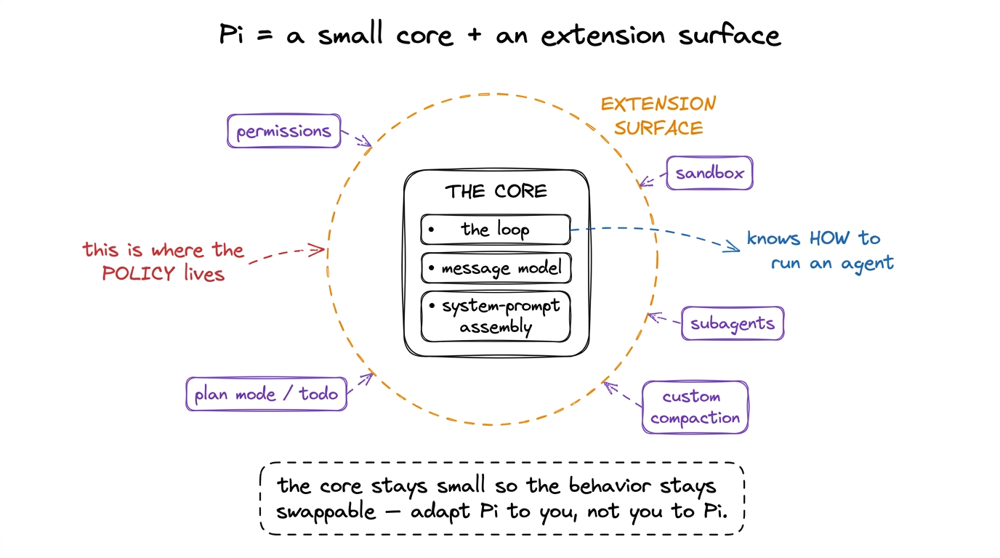
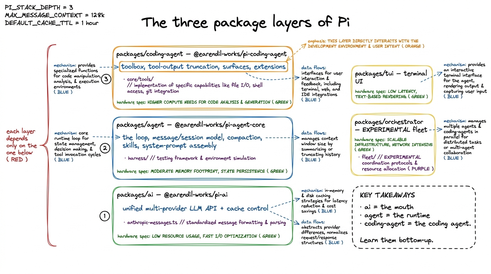
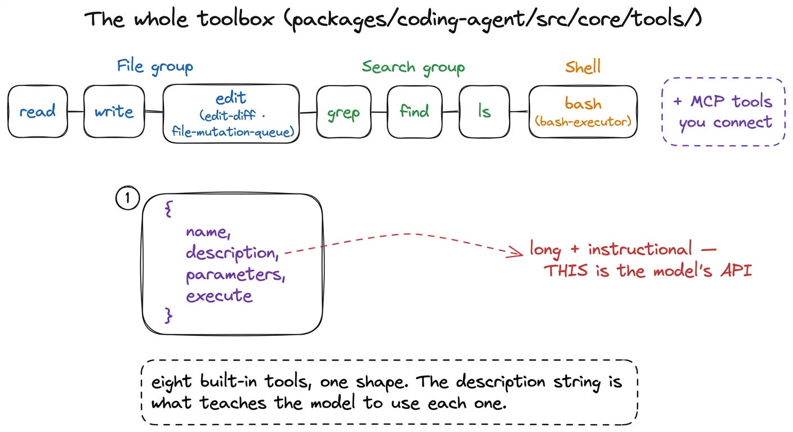
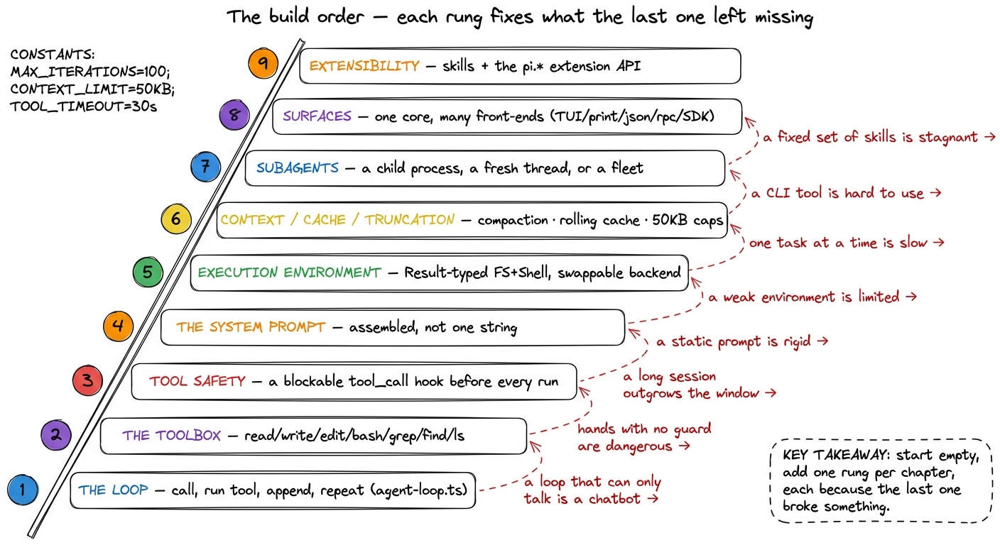

Pi from scratch: the plan START
There is a coding agent you can read end to end in an afternoon, and it is not a toy. It is called Pi (earendil-works/pi, MIT), and its own tagline is a design manifesto in one line: "a minimal agent harness — adapt Pi to your workflows, not the other way around." That sentence hides the whole shape of the thing. A minimal core, small enough to fit in your head, plus an extension surface where all the opinions live. The core knows how to run an agent; the extensions decide what kind of agent it is.
This chapter is the front door. Before we build Pi up from an empty file one layer at a time — the way every good from-scratch course earns each step by breaking the last one — we lay the whole map on the table. What Pi is. Which package owns what. And the order we will climb, one chapter per rung. Everything here is read straight from the source; when a detail isn't in the code, we will say so rather than guess.
What Pi actually is
Strip away the marketing and Pi is a program that does one loop over and over: hand a conversation to a language model, see if the model asked to use a tool, run the tool, feed the result back, and go around again until the model stops asking for work. That loop is the agent. Everything else — the tools it can call, how it stays cheap over a hundred turns, what it does when the conversation outgrows the context window, how it protects your machine — is machinery wrapped around that loop.
The distinctive move Pi makes is where it draws the line between core and policy.1 This is the whole reason Pi is such a good object to study. It proves a capable, real coding agent can be small — you do not need a giant company to build one, you need to understand the layers, which is exactly what this section walks through. Sandboxing, the permission UX, custom compaction, retrieval, plan mode, subagents — almost none of it is hardcoded. It is exposed as extensions: TypeScript modules the core loads and calls at the right moments. The core stays small on purpose so that the behavior stays swappable. Keep that in mind as a lens for the entire section: whenever you wonder "where does Pi decide X?", the answer is often "it doesn't — it leaves a hook, and an extension decides."

figure rendering · Pi is a minimal core that knows how to run an agent, ringed by an exteThe three layers, and what each one owns
Pi is a monorepo of layered packages. Three of them carry the story, and they stack cleanly: the model API at the bottom, the agent runtime in the middle, the coding agent on top. Each depends only on the one below it, which is exactly why you can learn them in order.
packages/ai — published as @earendil-works/pi-ai. This is the unified, multi-provider LLM API: one calling shape, many providers behind it, with the provider adapters living here. It is also where cache control is implemented — packages/ai/src/api/anthropic-messages.ts is the file that decides which parts of a request are served from the provider's cache instead of paid for again. Think of this layer as the mouth: it is how the harness talks to a model at all, and it does not know or care that there is an agent above it.
packages/agent — published as @earendil-works/pi-agent-core. This is the model-agnostic agent runtime: the loop itself (packages/agent/src/agent-loop.ts), the message and session model, compaction, skills, and system-prompt assembly. The heart of it lives under packages/agent/src/harness/. Crucially this package has no idea it is a coding agent — it knows about turns, tool calls, and context, not about reading files or running bash. That separation is deliberate: the runtime could drive any kind of agent.2 A useful teaching line for the whole section: the loop the runtime runs is linear — a flat array of messages — but the harness underneath it remembers a tree of session entries, which is what makes forking and branch navigation possible. We unpack that in from chat to agent.
packages/coding-agent — published as @earendil-works/pi-coding-agent. This is where Pi becomes a coding agent. It owns the toolbox (src/core/tools/), tool-output truncation, the surfaces (the different front-ends you drive it through), and the extension system. Everything that makes Pi feel like a colleague at a terminal — reading your files, editing them, running your tests — is added here, on top of a runtime that is otherwise domain-agnostic.
Two more packages round it out. packages/tui is the terminal UI library. packages/orchestrator is an experimental multi-agent layer for driving a whole fleet of Pi instances; we will treat it as the frontier, clearly marked as such, when we get to subagents.

figure rendering · The three layers, bottom to top: pi-ai (multi-provider API + cache), pThe actual toolbox, so the target is concrete
It helps to know the finish line before the climb. The coding agent's hands are a small, fixed set of tools in packages/coding-agent/src/core/tools/: read, write, edit (with edit-diff and a file-mutation-queue), bash (with a bash-executor), grep, find, and ls — plus any MCP tools you connect. That is the whole toolbox. Every one of them shares the same shape: an object of {name, description, parameters, execute}, where the description string is long and instructional — read's description literally tells the model to use offset/limit for large files and "continue with offset until complete." The description is not documentation for you; it is the API the model reads to learn what it can do. We give the toolbox its own chapter in the toolbox.

figure rendering · Pi's built-in toolbox: read/write/edit, grep/find/ls, bash, plus MCP tThe build order — one rung at a time
Here is the plan for the rest of the section. We start from nothing and add exactly one capability per chapter, and each chapter opens by pointing at what the previous one left broken. That is the causal spine: every layer exists because the last one wasn't enough.

figure rendering · The nine rungs we climb: loop, toolbox, tool safety, system prompt, exRung 1 — the loop. The beating heart, runLoop() in packages/agent/src/agent-loop.ts: ask the model, extract its tool calls, execute them, append the results, and go around. It ends not on a turn counter but when the model stops asking for tools. That is from chat to agent.
Rung 2 — the toolbox. A loop that can only talk is a chatbot. We give it the eight file-and-shell tools and study the tool shape — why the description is the real interface. That is the toolbox.
Rung 3 — tool safety. Hands with no guard will happily run a dangerous command. Pi fires a blockable tool_call event before every execution — an extension can return { block: true, reason } or mutate the arguments in place. Permission gates, protected paths, project trust, and the sandbox all plug in here. That is tool safety.
Rung 4 — the system prompt. The model needs to know who it is. Pi's prompt is not one magic string; buildSystemPrompt() assembles it — base template, project context from your AGENTS.md, an available-skills block, the date and working directory. That is the system prompt.
Rung 5 — the execution environment. Where do the tools actually run? Pi hides the filesystem and shell behind a Result-typed ExecutionEnv whose methods never throw. Swap the backend and the same read/bash/edit run local, over SSH, or in a sandbox. That is the execution environment.
Rung 6 — context, cache, and truncation. Three problems that all bite over long sessions. The conversation outgrows the window, so Pi does budget-triggered summarization compaction. Re-sending the whole history every turn would be ruinous, so Pi uses a rolling cache breakpoint. A single tool call could dump a megabyte into context, so Pi truncates every tool's output at 2,000 lines or 50 KB, with a pointer to the rest.
Rung 7 — subagents. Some jobs are too big for one context. Pi answers this at three scales — a child process, a fresh thread, or a whole fleet — in subagents.
Rung 8 — surfaces. One headless core, many front-ends: an interactive TUI, a --print mode, a JSON mode, and a strict JSONL RPC protocol, all driving the same AgentSession. That is surfaces.
Rung 9 — extensibility. Finally we close the loop on the opening idea: everything is an extension. Skills as progressive disclosure, custom tools, slash commands, and the ~31-event pi.* bus. That is extensibility.
The one promise for the whole section
Every claim in these chapters is read from the source, cited to a real file, and quoted where the exact shape matters. Where Pi genuinely leaves a decision open, we will say "Pi leaves this to an extension" rather than invent a mechanism. By the last rung you will have watched a real, MIT-licensed coding agent assemble itself from an empty file — and you will never again look at one as magic. You will see the loop, the toolbox, the guardrails, the context machinery, and the extension surface, and know exactly what each is doing.
So we have the map. Next we start at the bottom and make the smallest thing that genuinely acts: from chat to agent.